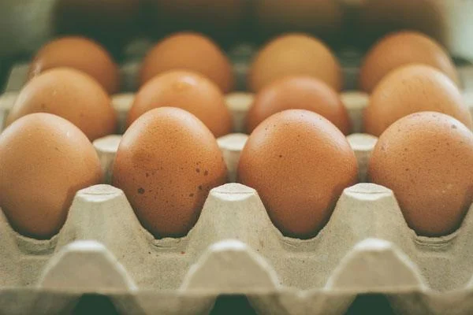
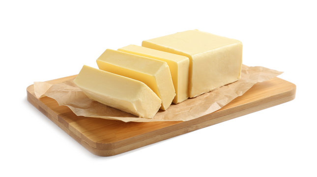
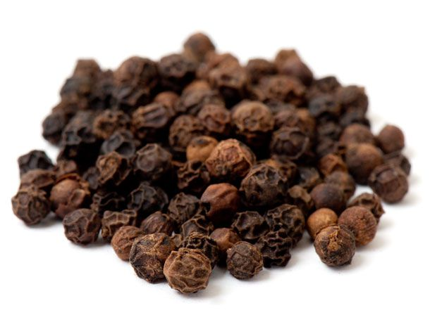

Ingredients and Cooking
4 large eggs
2 tbsp butter

Salt to taste
Pepper to taste
- Crack the eggs into a bowl, add salt and pepper, and beat until smooth.
- Heat butter in a non-stick skillet over medium heat.
- Pour in the eggs and let them sit, undisturbed, for a few moments.
- Using a spatula, stir the eggs from the edges to the center, letting the uncooked eggs flow underneath.
- Cook until the eggs are softly set and slightly runny in places.
- Remove from heat and let the eggs finish cooking with the residual heat from the pan.
- Serve immediately with your choice of sides.